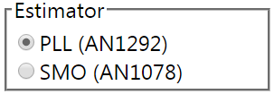
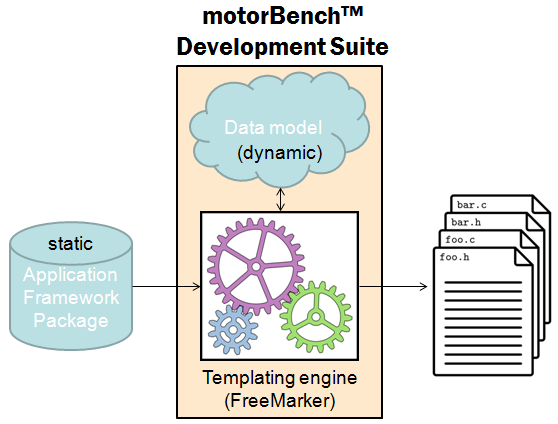
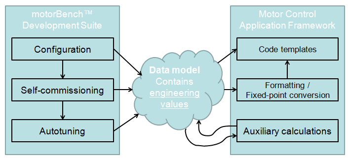

3.4. 代码生成¶
MCAF 使用 FreeMarker 模板引擎来生成代码。本节描述代码生成过程的概述；虽然这对于理解输出代码并非必要，但了解 MCAF 背后的一些背景可能会有所帮助。
3.4.1. 为何使用代码生成？¶
使用代码生成的一些原因已在 简介：
多种硬件配置的管理 ——通过使用代码生成，MCAF 可以用单一固件包支持处理器、板卡、 PIM、电机和负载的多种组合。
整定过程的自动化 — motorBench® Development Suite 包含可自动整定电流和速度控制器的算法。
还有一些更微妙的原因：
C 语言对设计时计算的支持非常有限 ——本质上只有两种机制：
常量折叠——编译器会在编译时将
(3*7)+1这样的表达式转换为单个值 (22)，而非在运行时计算预处理器——C 预处理器会在编译时（即编译之前）替换
#define表达式中的文本
这些机制不提供测试或验证功能。它们非常脆弱，常常导致错误，而且错误要么静默发生，要么产生难以理解的编译器消息。这些问题将在下一节关于 配置参数。
代码生成可以提供 UI 驱动的灵活性。 例如，motorBench® Development Suite 能够在多个可选选项之间提供选择（例如：选择无传感器位置估计器）

，然后利用 MCAF 固件包中适当的源文件来实现所选选项。（注：motorBench® Development Suite 的初始版本不提供此功能，但计划在未来版本中实现。）
3.4.2. 代码生成如何工作？¶
MCAF 中的代码生成由 模板引擎 驱动，它作用于一个静态的 固件包 和一个动态的 数据模型。

模板引擎主要由 FreeMarker 组成，但也包含其他组件，例如用于支持配置文件、条件代码生成和 Jython 脚本的组件。
固件包包含一组固定的（静态）模板文件、配置文件和 Jython 脚本，用于生成源代码。
数据模型是一组命名的键值对，供代码生成应用程序（CGA，其中 motorBench® Development Suite 是主要示例）使用，用于将不同的信息项组织在固件包所引用的已知位置。数据模型通常在每次代码生成运行之间会发生变化。
模板引擎 渲染 固件包中的文件，使用数据模型来确定输出文件中依赖于 CGA 输入数据的部分。在某些情况下，渲染操作只是没有输入依赖的逐字复制；在其他情况下，可能会进行复杂的计算；但在许多情况下，渲染只是简单的表达式求值和替换。
例如，我们可以有 代码清单 3.1中所示的模板文件，以及 代码清单 3.2：
There was an old lady of ${PLACE}
Who was baked by mistake in a ${THING}
To the household's disgust
She emerged through the crust
And exclaimed, with a yawn, "${QUOTE}"
PLACE： Rye
THING： pie
QUOTE： Where am I?
这将渲染为 代码清单 3.3：
There was an old lady of Rye
Who was baked by mistake in a pie
To the household's disgust
She emerged through the crust
And exclaimed, with a yawn, "Where am I?"
模板包含特殊的占位符，例如 ${PLACE} 和 ${THING} ，FreeMarker 将其称为 插值。这些占位符包含一个表达式，该表达式会被求值并替换到输出文本中。
这样的示例对电机控制来说不太实用，但同样的表达式求值和替换机制也可用于生成 C 代码或注释，如 代码清单 3.4 和 代码清单 3.5和 代码清单 3.6：
/*
* L = ${(motor.L*1000)?string["#.###"]} mH
* R = ${motor.R?string["#.###"]} ohms
* Time constant = ${(motor.L/motor.R * 1000)?string["#.###"]} ms
* Your inductance is <#compress>
<#if (motor.L < 0.001) >too low
<#elseif (motor.L > 0.01) >too high
<#else >just right
</#if></#compress>!
*/
<#assign velocity_scale=ScaleFactor(6000.0/30*PI, "rad/s").q15() >
/* Maximum motor velocity, converted to integer counts:
* ${(motor.max_velocity*30/PI)?string["####.##"]} RPM
* ${motor.max_velocity?string["####.##"]} rad/s
*/
#define MAX_VEL ${velocity_scale.toCounts(motor.max_velocity)}
motor：
L： 1.234567e-3
R： 6.543210e-1
max_velocity： 234.56
ScaleFactor： <some Java object created to facilitate engineering conversion>
PI： 3.141592653589793
/*
* L = 1.235 mH
* R = 0.654 ohms
* Time constant = 1.887 ms
* Your inductance is just right!
*/
/* Maximum motor velocity, converted to integer counts:
* 2239.88 RPM
* 234.56 rad/s
*/
#define MAX_VEL 12233
3.4.2.1. 数据模型准备¶
值可以通过以下几种机制进入数据模型：
来自 CGA (motorBench® Development Suite）。这通常发生在需要来自客户输入的配置数据（电机名称、极数等）的值时，或者当值由 CGA 自身计算（自动整定的控制环增益）时。
来自 MCAF 固件包中的配置文件。 这通常用于管理应用框架通用的某些常量，但应与 CGA 解耦，以便作为应用框架包改进的一部分进行更新。
来自 MCAF 框架包中的 Jython 脚本。 这通常用于处理不属于 CGA 核心功能的计算，例如压摆率或其他与应用框架包本身紧密耦合的派生常量。
模板引擎不关心值的来源，只关心数据模型中被固件包模板引用的命名位置包含可用于在输出文件中生成文本字符串的有效值。
确定数据模型的过程可以设想为如 图 3.2所示。一般来说，motorBench® Development Suite 和 MCAF 提供或计算工程值，然后通过适当选择工程单位缩放因子，在生成的代码中表示为定点整数。

图 3.2 数据模型生成过程¶
3.4.2.2. 条件代码生成¶
有时我们需要根据数据模型中的某些内容提供不同的内容：例如，在多个位置/速度估计器之间进行选择。模板引擎支持此功能。
逐字符/逐行条件生成 FreeMarker 中有可用的条件功能（
<#if>指令，例如），其行为类似于 C 中的#if预处理器指令，不同之处在于它们在代码生成时而非编译时处理。这些功能可以谨慎使用，以启用或禁用特定的代码行，或从多个选项中进行选择。逐文件条件生成 对于整个模块的包含或排除，模板引擎中有一些功能允许模板作者将特定源文件与一个"标签"关联，以指定该源文件仅在数据模型中的已知位置存在该标签时才被渲染。这使 CGA 无需知道应包含或排除哪些文件；相反，CGA 列出要包含的标签作为命名功能，然后应用框架包包含标签名称与源文件的关联。
3.4.2.3. 更多信息¶
有关代码生成过程的更多信息，请 联系 Microchip。